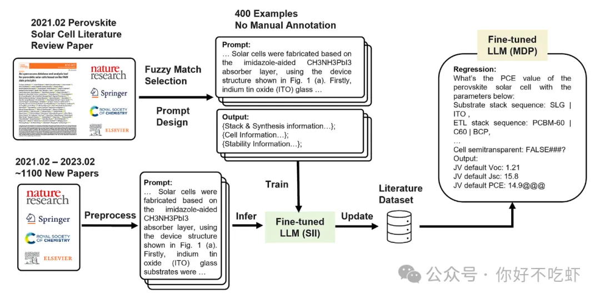
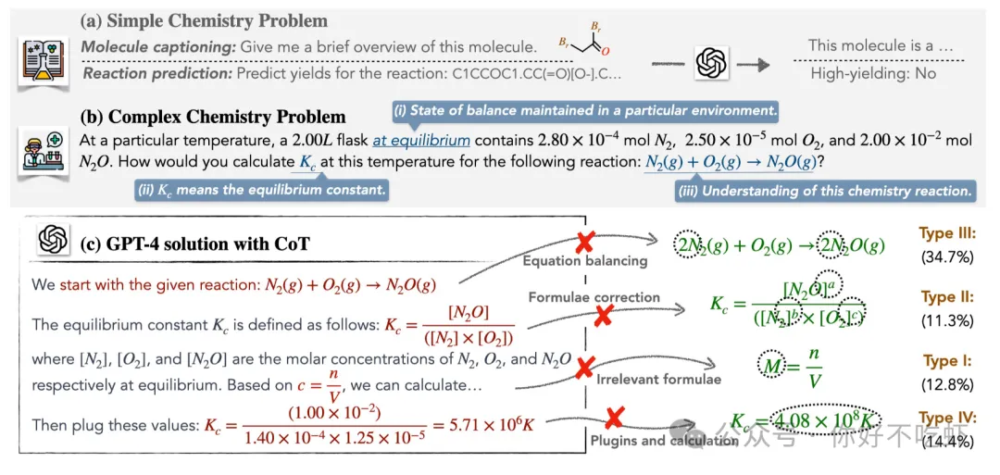

人工智能已成为改变科学研究范式的关键力量，而化学与材料科学作为基础学科，正经历着由大型语言模型（LLMs）带来的前所未有的变革。从自动化处理海量科学文献、提取结构化数据，到预测材料的关键性能；从提供战略性的研究洞察，到攻克复杂的化学推理难题；再到驱动自动化实验的初步探索，LLMs的应用边界正在不断拓展，展现出重塑科研流程的巨大潜力。
为了更清晰地把握这一快速发展的领域脉络，本文将对我们近期公众号推送解读的部分篇代表性研究进行一次系统的“回望与前瞻”。我们将深入剖析这些前沿工作中的核心技术与方法（例如，结构化信息推理SII、领域微调、检索增强生成RAG、结构化化学推理STRUCTCHEM、AI Agent架构等），比较不同策略的优势与局限，并结合这些实例，探讨LLMs在化学材料领域未来的发展方向、面临的挑战与关键机遇。我们力求通过这次梳理，为关注此交叉领域的科研同仁提供一份全面而深入的技术分析与思考框架。
回望：LLM的进化之路——从助手到引擎的足迹
回顾近期AI在化学材料领域的探索，我们可以清晰地看到LLM的角色和能力正在经历一条显著的进化路径。
第一阶段：从文本到洞见——结构化信息提取与初步预测的新范式
科研始于对现有知识的掌握与利用。面对浩如烟海、格式各异的科学文献，如何高效地将其转化为可计算、可分析的结构化数据，一直是制约材料科学发展的瓶颈。
我们深入解读的一项关于钙钛矿太阳能电池的研究（源自我们之前的推文），就集中展示了LLM如何应对这一挑战并展现其超越传统方法的潜力。该研究直面了传统NLP技术（如NER）在提取高质量、关联性强、符合FAIR原则数据时面临的困境（成本高、信息孤岛、无法处理隐式信息等）。为此，研究者创新性地提出了“结构化信息推理”（Structured Information Inference, SII）这一新任务，旨在更贴近科学家整理和理解信息的方式，直接从非结构化文本端到端地生成包含复杂层级关系、经过归一化甚至包含推理信息的结构化数据。

图：结构化信息推理（SII）任务示意图 (示意图)
这项工作的核心洞见在于，对于完成复杂的SII任务，简单的LLM提示工程（Prompting）效果有限，而领域微调（Fine-tuning）开源LLM（如LLaMA）则显示出巨大威力。通过微调，模型能够学习并掌握特定的知识框架（schema）、数据格式规范、归一化规则乃至一定的推理能力，从而准确地提取显式信息、处理隐式信息，生成可以直接用于下游分析的高质量结构化数据（达到了87.14%的F1分数）。
该研究并未止步于数据提取，而是探索了利用这些LLM生成的结构化数据直接进行材料性能预测（MDP）。他们以提取出的纯文本格式的器件信息作为输入，微调LLM来预测太阳能电池的关键电学性能（Voc, Jsc, PCE）。虽然结果显示，LLM直接预测精确连续数值的精度可能不如经过精心特征工程的传统机器学习模型，但其关键优势在于无需显式特征工程。这表明LLM有潜力直接从高维、包含文本描述的结构化输入中学习复杂关系，极大地简化了传统预测流程中最耗时、最依赖专家经验的环节。
这项关于钙钛矿的研究，完整地展示了LLM从处理原始文本、生成结构化知识到进行初步性能预测的潜力，也揭示了领域微调对于激发LLM在专业领域能力的重要性。
第二阶段：挖掘深层关联，辅助知识发现
LLM的能力远不止于处理和预测明确存在于文本中的信息。其内部通过海量数据预训练所编码的知识，本身就可能蕴藏着未被发现的科学规律。
正如我们解读的Nature npj综述（推文2）所揭示的，研究者发现通过分析LLM学习到的词嵌入（Word Embeddings）向量之间的相似性，可以在文献中挖掘出未被明确提及的隐藏材料关联。例如，利用Word2vec分析大量摘要，成功预测了新的热电材料候选物；甚至在高熵合金概念普及前就通过词嵌入分析识别出了其代表性体系。
后续的另一篇综述（推文6）也强调，利用LLM embeddings进行特征提取已成为一种重要的应用方向。模型可以直接从材料的文本描述（如化学式、名称、合成步骤）中学习有效的特征表示，无需复杂的特征工程，甚至能在某些性能预测任务上取得与基于图形的GNN模型相当或更好的结果（如LLM-Prop, MatInformer）。这表明LLM不仅能“读懂”字面意思，还能捕捉更深层次的语义和潜在关联，成为辅助知识发现的新工具。
第三阶段：赋能战略洞察与攻克复杂推理
随着技术发展，LLM的角色进一步深化，开始介入更需要“智慧”的科研环节：提供战略指导和执行复杂的逻辑推理。
一篇关于二价氢化物固态电解质（推文4）的研究展示了一种独特的LLM应用模式：将其作为“洞察引擎” 。该研究并非让LLM处理原始文献，而是分析一个已有的结构化数据库（DDSE）。通过这种分析，LLM产生了两个关键的战略性洞见：
- 指明了“二价氢化物 + 中性分子”是极具潜力的研究方向。
- 通过对比模拟方法与实验数据，判断出MetaD是预测活化能更可靠的计算工具。
这两个由LLM辅助产生的洞见直接优化了研究策略，指导了后续的模拟方法选择和材料体系聚焦，充分体现了LLM在处理复杂信息、提炼关键要点、辅助科研决策方面的独特价值。
与此同时，科学研究的核心是严谨的逻辑推理，尤其是在化学等需要定量计算的领域。一篇关于STRUCTCHEM（推文5）的研究直面了LLM在复杂化学推理方面的短板——并非缺乏知识，而是缺乏有效的结构化思维来引导推理过程。STRUCTCHEM策略通过精巧的三阶段提示设计：
- 化学式生成：显式激活并奠定知识基础。
- 逐步推理（含PoT）：结构化推导，利用代码提高计算精度。
- 基于置信度的回顾与精炼：创新性地引入置信度评估和门控机制，迭代优化结果可靠性。

图：STRUCTCHEM的三阶段结构化化学推理框架 (示意图)
实验证明，STRUCTCHEM显著提升了GPT-4等模型解决复杂化学问题的准确率，并能生成高质量、可学习的推理过程。这表明，通过赋予LLM符合科学规范的“思考”方式，其在解决严肃科学问题上的能力可以得到极大增强。
第四阶段：迈向自主探索，智能代理初露锋芒
LLM能力的终极延伸，或许在于构建能够自主执行科研任务的智能代理（AI Agents）。两篇综述（推文2、推文6）都重点探讨了这一前沿方向。Agent以LLM为“大脑”，被赋予了规划、记忆、使用工具（数据库、模拟软件、实验仪器接口）和行动的能力。
理论上，Agent有望承担起从文献调研、材料设计、计算模拟、实验方案制定，到（未来）控制自动化平台执行实验的全流程任务。虽然目前仍处于早期探索阶段，但已有工作（如Coscientist自主化学反应，推文2；Quantum Chem Agent, SPM Agent，推文6）展示了其巨大潜力，预示着科研范式可能从“人主导、AI辅助”向“AI驱动（部分任务）、人监督”的转变。
串联与洞察：AI赋能科研的多棱镜
回顾这一系列进展，我们可以看到LLM在化学材料领域的作用日益多元和深入：
- 角色演变： 从最初的文献信息助手，进化到数据提取器、性能预测器、特征学习器、知识发现者、战略顾问、复杂问题推理器，乃至未来可能的自主研究执行者。
- 关键技术： 领域微调（提升专业性）、RAG（增强知识时效性与可靠性）、提示工程（引导行为与思维，如CoT, PoT, STRUCTCHEM）、Agent架构（赋予行动能力）等技术是推动这一演进的关键驱动力。
- 应用多样性： 不同的研究展示了LLM可以灵活应用于科研流程的不同环节，解决从数据处理到策略制定再到逻辑推理的各类问题。
前瞻：LLMs在化学材料研究中的发展路径、挑战与机遇
展望未来，大型语言模型（LLMs）在化学与材料科学领域的应用展现出广阔前景，但也伴随着不容忽视的挑战。基于当前的研究进展和局限性，我们可以从机遇、挑战和未来路径三个维度进行审慎分析。
一、 潜在机遇与发展方向
LLMs凭借其在自然语言处理、知识编码和初步推理方面的独特能力，为化学材料研究带来了多方面的机遇。这些潜力主要体现在提升研发效率、促进知识发现以及改善工具可及性等方面。下表 1 总结了几个关键的发展方向：
表 1: LLMs在化学材料研究中的潜在机遇与发展方向
| 类别 | 具体方向 | 说明与关联 |
|---|---|---|
| 提升研发效率 | 自动化/半自动化文献信息提取与结构化 (如SII方法) | 减少重复性劳动 |
| 提供初步的材料性能预测 (如钙钛矿MDP探索) | 加速候选材料筛选 (目前精度有限) | |
| 辅助解决复杂化学推理问题 (如STRUCTCHEM策略) | 提供解题思路或验证途径 | |
| (未来) 辅助或驱动实验设计与执行 (如Agent构想) | 缩短特定研发环节耗时 | |
| 促进知识整合与发现 | 加速跨学科知识的整合与利用 | 利用LLMs的文本处理能力 |
| 从大规模文本中挖掘隐藏的模式或关联 (如词嵌入应用) | 可能揭示文献中未明确阐述的潜在关联 | |
| 改善工具可及性 | 通过自然语言接口降低复杂软件/数据分析工具的使用门槛 (如Agent驱动模拟设想) | 可能赋能更广泛的研究人员 |
如表所示，无论是通过结构化信息提取（SII）加速数据准备，还是利用模型辅助性能预测（MDP）和复杂推理（STRUCTCHEM），亦或是展望未来智能体（Agent）的应用，LLMs都有望在不同层面优化传统研究流程，激发新的研究思路。
二、 面临的关键挑战
尽管前景可期，但将LLMs更深入、更可靠地应用于严谨的科学研究，必须正视并克服一系列关键挑战。这些挑战涉及模型的可靠性、能力边界、数据依赖性、集成难度以及资源消耗等多个层面。下表列出了当前面临的主要障碍：
表 2: LLMs应用于化学材料研究的关键挑战
| 挑战类别 | 具体问题 | 说明 |
|---|---|---|
| 可靠性与事实准确性 | “幻觉”问题，生成不准确或虚假信息 | 应用于科学领域的根本障碍，RAG等技术仅能部分缓解 |
| 科学推理深度与鲁棒性 | 难以处理复杂逻辑、因果关系；分布外泛化能力有限 | 深层次科学理解仍是瓶颈，常需外部结构化引导（如STRUCTCHEM） |
| 数值处理与定量能力 | 固有的数值计算精度问题；对定量关系的理解不足 | 限制了在需要高精度定量分析任务中的直接应用（如MDP精度、计算错误） |
| 领域数据依赖与质量 | 高质量、大规模、标注准确、有版权的领域数据稀缺；数据偏差可能影响公平性与泛化性 | 获取和构建成本高，是限制模型性能提升和应用推广的重要因素 |
| 模型与工作流集成 | 缺乏标准化接口与协议；与现有软件、数据库、实验设备的兼容性问题 | 实现无缝、可靠集成的技术障碍 |
| 计算资源需求与效率 | 大型模型的训练与推理成本高昂 | 限制了广泛部署和应用，需PEFT等优化技术 |
| 可解释性与可信度 | “黑箱”特性，决策过程不透明；缺乏成熟的可信度评估机制 | 与科学研究要求的透明性和可验证性相悖 |
| 安全与伦理考量 | 具备行动能力的Agent可能带来误操作或非预期后果的风险 | 需要建立严格的安全防护和伦理规范 |
上表清晰地揭示了LLMs在科学应用中需要跨越的障碍。其中，结果的可靠性、推理的严谨性以及定量能力的准确性是科学研究不可或缺的要求，也是当前LLMs普遍存在的短板。此外，数据、集成、效率和可信度等问题也直接关系到LLM技术能否真正落地并发挥价值。
三、 未来研究路径建议
为应对上述挑战，推动LLMs在化学材料领域健康、有效地发展，未来的研究需要系统性地布局和投入。关键的研究方向应着力于提升模型自身能力、完善支撑生态以及探索更优的应用范式。下表概括了几个建议的研究路径：
表 3: LLMs在化学材料领域未来研究路径建议
| 研究方向 | 具体措施 | 目标 |
|---|---|---|
| 发展领域优化模型 | 研发更适合处理科学文本、多模态信息（如结构）和科学推理的基础模型 | 提升模型对化学材料领域知识和数据的理解能力 |
| 增强推理与定量能力 | 探索新算法、训练策略和模型架构，提升逻辑、因果推断和数值计算性能 | 直接应对核心能力短板 |
| 构建开放工具与基准 | 开发标准化的集成接口、共享高质量领域数据集和严格的评测基准 | 促进技术的可靠评估、复现和应用落地 |
| 探索人机协同范式 | 深入研究人与LLM/Agent的最佳协作模式； 设计有效的交互界面、验证机制和决策支持系统 | 确保AI作为研究者的可靠助手，而非取代者 |
| 关注效率与可及性 | 持续优化模型效率（如PEFT、蒸馏）； 降低部署和使用门槛 | 使更广泛的科研群体能够受益 |
如表3所示，未来的努力方向是多维度的。既要着力于提升模型本身的硬实力（如推理、定量、多模态能力），也要同步建设开放共享的生态环境（如数据、工具、基准），并深入研究如何实现高效、可靠的人机协同。这需要算法研究者、领域科学家和工程师的紧密合作。
总而言之，LLMs为化学材料科学带来了变革性的机遇，但也伴随着严峻的技术挑战。通过持续的技术攻关和应用探索，并始终坚持科学研究的严谨性要求，我们有望逐步克服障碍，将LLMs真正打造成为赋能科学发现的强大工具。未来的发展图景将是一个人机智能深度融合、共同推动化学材料领域不断突破的时代。
结语：拥抱智能，审慎前行
大型语言模型正以前所未有的姿态，叩响化学与材料科学研究范式变革的大门。从我们回望的这些研究中，可以看到AI已经从一个旁观的“助手”，逐步走向舞台中央，成为能够深度参与知识发现、性能预测、策略制定、复杂推理乃至实验自动化的“引擎”。
但这绝不意味着人类科学家的退场。恰恰相反，LLM作为一种强大的工具，其价值的实现高度依赖于领域专家的智慧引导、批判性评估和有效利用。我们既要拥抱AI带来的巨大机遇，利用其加速创新进程；也要正视其局限与挑战，保持科学的审慎和严谨，致力于构建更可靠、更可信赖、人机协同的智能研究新生态。
化学材料的未来，将是数据、算法、领域知识与人类智慧深度融合的未来。让我们在这条充满希望与挑战的道路上，携手前行，共同见证并塑造一个由AI赋能的、更加辉煌的科学新纪元。